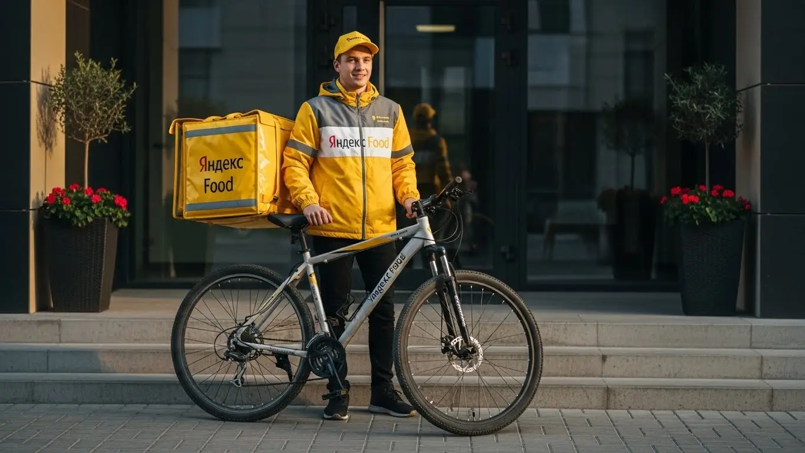
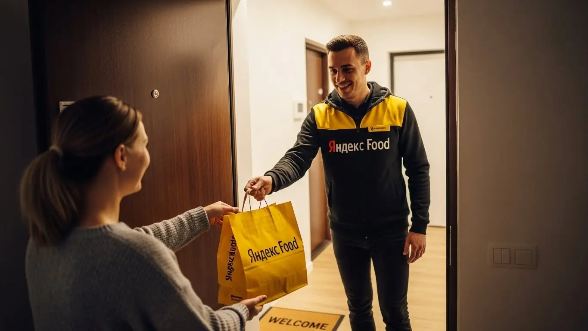

Доход и условия работы курьером Яндекс Еды в Павловском Посаде 2025-2026
- Работа курьером Яндекс Еды в Павловском Посаде: для кого эта вакансия и что вы получите
- Сколько вы будете зарабатывать курьером в Павловском Посаде: калькулятор дохода и разбор выплат
- Реальный заработок курьера в Павловском Посаде: смены и месячный доход
- График работы и форматы занятости
- Требования к кандидату и документы
- Самозанятость, налоги и юридическая чистота
- Пошаговое оформление и первый выход на линию в Павловском Посаде
- Пешком, на вело или на авто: что выгоднее в Павловском Посаде
- Районы, маршруты и «топовые» зоны заказов в Павловском Посаде
- Безопасность, страховка, штрафы и оплата простоя
- Плюсы и возможные минусы работы курьером в Павловском Посаде
- Реальные истории и отзывы курьеров из Павловского Посада
- Ответы на главные вопросы о работе курьером Яндекс Еды в Павловском Посаде
- Короткие ответы на главные вопросы
- Итоги и ваш следующий шаг
Все города
Думаешь, работа курьером в Павловском Посаде — это просто включил приложение и гребешь деньги лопатой? А как насчет пробок на Большой Покровской в час пик, заказов в частный сектор за Городком, где и адреса-то не найдешь, или убийства подвески на наших дорогах зимой? Я здесь, чтобы рассказать, как на самом деле устроена работа курьером Яндекс Еды в Павловском Посаде — без розовых очков и рекламных обещаний.
Поверь, 9 из 10 новичков у нас в городе сливаются в первый же месяц. Не потому что работа плохая, а потому что никто им не объяснил местную «кухню». Они не считают реальные расходы на бензин или ремонт велика, не понимают, почему в одном районе заказы сыпятся, а в другом — тишина, и как рейтинг влияет на то, дадут ли тебе самый жирный заказ из центра. В итоге — разочарование и пустой кошелек. А ведь зная специфику Павловского Посада, можно стабильно делать хорошие деньги.
В этом гиде мы по-честному разберём всё до винтика. Мы посчитаем, сколько реально остается в кармане после всех расходов. Я покажу на карте, где в Павловском Посаде самые «хлебные» зоны и в какое время. Выясним, на чем лучше работать — на своих двоих, велосипеде или авто, с учетом наших расстояний и погоды. И, конечно, обсудим штрафы, чаевые и как не попасть впросак в первые недели. Если вы хотите сразу увидеть краткую сводку условий, требования и подать заявку, вся актуальная информация про работу курьером Яндекс Еда в Павловском Посаде собрана на официальной странице для партнёров.
Меня зовут Алексей. Я сам не один год откатал с желтым рюкзаком по этим улицам, а сейчас у меня свой небольшой таксопарк-партнер. Так что я видел эту систему со всех сторон. Никакой рекламы, только мясо, только реальный опыт. Я расскажу тебе всю правду о работе курьером в нашем городе. Готов? Тогда давай по порядку, сейчас всё разложу по полочкам.
Чтобы тебе было проще сориентироваться, дальше будет краткий гид по ключевым темам статьи.
Что ты точно узнаешь из этого разбора
В этой статье ты ТОЧНО узнаешь:
- Сколько реально можно заработать в Павловском Посаде за смену и за месяц, если работать на подработке или полный день?
- В каких районах города больше всего заказов и как выбирать «хлебные» слоты в приложении, чтобы не стоять без дела?
- Что выгоднее в Павловском Посаде — ходить пешком, ездить на велосипеде или работать на авто, и как это влияет на доход?
- За что на самом деле штрафуют и как работает оплата простоя, если заказов вдруг мало?
- Как за 10 минут оформить самозанятость, сколько платить налогов и почему это проще, чем кажется?
- Как устроен процесс от анкеты до первого заработка и можно ли выйти на линию уже на следующий день?
А если тебе некогда читать всю статью — переходи сразу к заключению, где ты найдёшь короткие ответы на все эти вопросы и указания, в каких разделах искать подробности.
А для начала — главные цифры и факты о работе в Павловском Посаде в одной картинке.
Работа в Яндекс Еде: Павловский Посад в цифрах
Работа курьером Яндекс Еды в Павловском Посаде: для кого эта вакансия и что вы получите
Давай начистоту: работа курьером — это не для всех, но для многих это отличный вариант. В Павловском Посаде, где нет суеты мегаполиса, эта деятельность имеет свою специфику и плюсы. Она идеально подходит, если ты ищешь гибкость и быстрые деньги без начальника над душой и сложных требований. Здесь не нужно годами учиться или иметь связи — нужен только смартфон, желание двигаться и здравый смысл.
Это возможность самому решать, когда и сколько работать. Хочешь — выходишь на пару часов после основной работы, хочешь — катаешься полный день. Деньги приходят на карту практически сразу, ведь одно из главных преимуществ — ежедневные выплаты. Для нашего города это особенно ценно, так как позволяет оперативно закрывать финансовые вопросы. По сути, ты получаешь готовую бизнес-модель: есть заказы, есть приложение, которое ведёт тебя по маршруту, есть поддержка. Твоя задача — просто вовремя и аккуратно доставлять.
Из практики: у меня начинал парень, студент местного техникума. Жил в Южном, денег вечно не хватало. Начал выходить на 3–4 часа по вечерам на велосипеде. За первый месяц, работая 4–5 дней в неделю, он спокойно сделал себе «сверху» около 25 тысяч рублей. Для него это была не просто подработка, а реальный шаг к самостоятельности, позволивший тратить деньги на свои нужды, не дёргая родителей.
В общем, вакансия курьера в Павловском Посаде — это хороший старт для тех, кто ищет работу без опыта, надёжная подработка для тех, у кого уже есть основная занятость, и полноценный источник дохода для тех, кто готов работать системно. Главное — понять, что твой заработок зависит напрямую от тебя, а не от настроения начальника.

Кому подойдёт эта работа в Павловском Посаде
Эта вакансия, по моему опыту, как конструктор — каждый собирает из неё то, что ему нужно. Если ты студент, то это почти идеальный вариант. Можешь выходить на пару часов между парами или вечером, чтобы заработать на свои расходы. Свободный график полностью подстраиваешь под себя, а не наоборот. Никаких проблем с сессией или зачётами — просто не берёшь смены в нужные дни.
Для тех, кому нужна подработка, это тоже отличная история. Работаешь на заводе или в офисе по стандартному графику? Включай приложение в пятницу вечером или на выходных и получай дополнительный доход. Многие мои знакомые водители так и делают: откатали смену в такси, видят высокий спрос на доставку — переключаются и зарабатывают ещё. Условия простые, начать можно без опыта, всему научат за полчаса онлайн. Главное — быть совершеннолетним, с 18 лет можно начинать.
И, конечно, это вариант для тех, кому важны быстрые и регулярные деньги. Если ты не любишь ждать зарплату до 15 числа, то ежедневные выплаты — это твой козырь. Выполнил несколько заказов, и деньги уже у тебя на карте. Это даёт ощущение контроля над своими финансами, что в наше время очень важно.
Главные преимущества для жителей районов Городок, Филимоново, Южный
Одно из главных удобств в Павловском Посаде — возможность работать буквально в своём районе. Город у нас компактный, и тебе не придётся тратить по часу, чтобы добраться до «хлебной» зоны. Если ты живёшь, например, в микрорайоне Городок, то можешь спокойно брать заказы из местных кафе и магазинов и развозить их по соседним улицам. Не нужно ехать в центр, чтобы начать смену.
То же самое касается и других крупных жилых массивов. Живёшь в Филимоново — твоя рабочая зона уже вокруг тебя. Включил приложение, и через пару минут может прилететь заказ из ближайшей пиццерии. Для жителей Южного микрорайона это тоже актуально. Можно работать в пределах своего района, отлично зная все дворы и короткие пути, что даёт преимущество в скорости.
Такая локальная работа экономит кучу времени и денег на проезд. Ты не тратишь ни копейки, чтобы добраться до точки старта, — твой старт прямо у твоего подъезда. Это делает подработку максимально эффективной: всё время, которое ты выделил на смену, ты именно работаешь и зарабатываешь, а не стоишь в пробках или ждёшь автобус.
Краткое обещание по доходу и условиям
Если говорить о деньгах в Павловском Посаде, то цифры вполне реальные. При частичной занятости, выходя на смены по 3–4 часа в день, можно спокойно зарабатывать 1000–1800 рублей за смену. Если же рассматривать это как полную занятость и работать по 8–10 часов, то доход может достигать 3500–4500 рублей в день. В месяц при полной загрузке выходит в среднем от 60 000 до 90 000 рублей, особенно для курьера на своем авто, который берёт дальние заказы.
Ключевые условия просты и понятны. Во-первых, это свободный график — ты сам выбираешь дни и часы работы через приложение «Яндекс Про». Во-вторых, ежедневные выплаты на твою банковскую карту, что позволяет сразу распоряжаться заработанными деньгами. И в-третьих, начать можно без опыта — всему необходимому научат на коротком онлайн-инструктаже. От тебя требуется только быть старше 18 лет, иметь смартфон на Android и готовность оформить самозанятость для получения выплат.
Сколько вы будете зарабатывать курьером в Павловском Посаде: калькулятор дохода и разбор выплат
Заработок курьера — это не фиксированный оклад, а система, в которой ты сам влияешь на итоговую сумму. Твой доход складывается из нескольких частей, и если понимать, как это работает, можно зарабатывать значительно больше. Система прозрачна: в приложении «Яндекс Про» ты видишь стоимость каждого заказа ещё до того, как его принять. Нет никаких скрытых вычетов или непонятных комиссий.
Важно понимать, что в разные дни и часы стоимость доставки меняется. В пятницу вечером, когда все заказывают пиццу, или в дождливую погоду, когда никто не хочет выходить из дома, включаются повышенные коэффициенты. Это значит, что за тот же самый маршрут ты получишь в 1,5–2 раза больше денег. Опытные курьеры следят за картой спроса в приложении и выходят на линию именно в такие «горячие» часы, чтобы максимизировать свой доход.
Из практики: был у меня водитель-курьер, который поначалу выходил работать днём в будни. Зарабатывал средне. Я ему посоветовал попробовать сменить график: выходить в пятницу с 18:00 до 23:00 и в субботу в это же время. В первый же такой уикенд он заработал почти столько же, сколько до этого за 4-5 дневных смен. Просто потому, что попал в пик заказов, когда действовали высокие коэффициенты и люди охотнее оставляли чаевые.
В общем, твой заработок — это не случайность, а результат твоего подхода. Понимая, из чего он складывается, и используя инструменты вроде калькулятора дохода, ты можешь планировать свою работу и выходить на стабильно хороший уровень оплаты.
Из чего складывается доход курьера
Твоя итоговая зарплата за смену — это сумма нескольких составляющих. Давай разберём их по порядку, чтобы было понятно, откуда берутся деньги в ежедневных выплатах.
- Оплата за заказ. Это базовая стоимость за то, что ты забираешь и доставляешь посылку. Она фиксирована для каждого заказа.
- Доплата за расстояние. Чем дальше ехать от ресторана до клиента, тем больше денег ты получишь. Система автоматически рассчитывает оптимальный маршрут и добавляет плату за каждый километр пути.
- Повышающие коэффициенты. В часы пик (обед, вечер), в плохую погоду (дождь, снег) или в выходные и праздничные дни спрос на доставку резко растёт. В это время в определённых зонах города на карте в приложении появляются фиолетовые или красные области — это зоны с повышенным коэффициентом. Заказ из такой зоны будет стоить в 1,5, 2, а то и в 3 раза дороже.
- Бонусы. Яндекс часто предлагает персональные цели и бонусы. Например, «выполни 10 заказов за день и получи дополнительно 500 рублей». Это отличный способ увеличить свой доход, если ты работаешь регулярно.
- Чаевые. Клиенты могут отблагодарить тебя за хорошую работу, оставив чаевые через приложение. Все 100% чаевых идут тебе, сервис не берёт с них комиссию.
- Оплата простоя. Важный момент: если ты приехал в ресторан, а заказ ещё не готов, сервис начнёт доплачивать тебе за ожидание. Твоё время — это деньги, и здесь это понимают.
- Компенсация проезда. На некоторых заказах, особенно если нужно ехать далеко на общественном транспорте, может быть предусмотрена компенсация стоимости проезда.
Как пользоваться калькулятором дохода
Калькулятор дохода — это удобный инструмент, чтобы прикинуть свой потенциальный заработок ещё до выхода на линию. Пользоваться им очень просто, разберёшься за минуту.
Сначала ты выбираешь свой город — Павловский Посад. Затем указываешь тип доставки: пеший курьер, велокурьер или водитель-курьер на своём авто. Это ключевой параметр, так как от него зависит скорость выполнения заказов и, соответственно, возможный доход. После этого ты задаёшь свой предполагаемый график: сколько часов в день и сколько дней в неделю планируешь работать.
Калькулятор дохода курьера в Павловском Посаде
8 часов
5 дней
* Это примерный расчёт на основе средней ставки 400 ₽/час для г. Павловский Посад. Реальный доход зависит от спроса, бонусов, чаевых и типа доставки.
На выходе калькулятор покажет тебе примерный диапазон твоего заработка за день и за месяц. Важно понимать, что это прогноз, основанный на средних данных по городу. Твой реальный доход может быть как выше (если будешь работать в часы пик и получать хорошие чаевые), так и немного ниже. Но в целом, этот инструмент даёт хорошее представление о том, на какие цифры можно ориентироваться. Чтобы увидеть самые актуальные условия, посмотреть требования и сразу подать заявку, загляни на официальную страницу про работу курьером Яндекс Еда в твоём городе — там собрана вся свежая информация.
Примеры расчёта для пешего, вело- и авто‑курьера в Павловском Посаде
Чтобы было нагляднее, давай рассмотрим три реальных сценария для нашего города.
- Пеший курьер в центре. Допустим, ты студент и решил поработать 4 часа в пятницу вечером, с 18:00 до 22:00. Твоя зона — центр города, улицы Большая Покровская, Кирова, где много кафе. В это время высокий спрос, действуют коэффициенты. За 4 часа ты сможешь выполнить примерно 6–8 заказов. Средний чек заказа с учётом бонусов и коэффициентов будет около 200–250 рублей. Итог за смену: 1200–2000 рублей.
- Велокурьер между спальными районами. Ты выходишь на 6-часовую смену в субботу, работаешь с 12:00 до 18:00. Твой маршрут — между районами Городок и Филимоново. На велосипеде ты передвигаешься быстрее пешего курьера и можешь брать заказы на большее расстояние. За смену ты успеешь сделать 10–14 заказов. С учётом дневного спроса и бонусов твой заработок составит 2000–2800 рублей.
- Курьер на автомобиле по всему городу. Ты работаешь полный день, 8 часов, в дождливый будний день. На машине тебе доступны любые заказы: и из центра, и доставка в дальние точки, например, в пригородные посёлки. В плохую погоду всегда повышенный спрос и хорошие коэффициенты. За 8 часов ты можешь выполнить 15–20 заказов, включая крупные из магазинов. Твой доход за такой день может составить 3500–5000 рублей и выше.
Сравнение форматов доставки в Павловском Посаде
| Параметр | Пеший курьер | Велокурьер | Авто-курьер |
|---|---|---|---|
| Средний доход за 4 часа | 1000–1800 ₽ | 1400–2200 ₽ | 1800–2500 ₽ |
| Лучшие зоны | Центр города, плотная застройка | Спальные районы, парковые зоны | Весь город, пригороды, заказы из ТЦ |
| Расходы | Минимальные (удобная обувь) | Обслуживание велосипеда | Бензин, амортизация авто |
| Преимущества | Нет расходов, фитнес | Скорость, маневренность | Комфорт, большие и дорогие заказы |
Реальный заработок курьера в Павловском Посаде: смены и месячный доход
Теперь от теории перейдём к практике — к реальным деньгам, которые можно положить в карман в нашем городе. Заработок курьера в Павловском Посаде — это не фиксированный оклад, а живая цифра, которая зависит от твоего графика, спроса и погоды. Здесь нет московского потока заказов, но и конкуренция ниже, что позволяет при правильном подходе стабильно хорошо зарабатывать.
Главное, что нужно понять: твой доход напрямую зависит от количества выполненных заказов, расстояния и действующих коэффициентов. Система абсолютно прозрачна: все начисления видны в приложении «Яндекс Про», а выплаты можно получать очень гибко. Чем активнее ты работаешь в «горячие» часы, тем больше получаешь. Это не та работа, где можно отсидеться и получить зарплату, — здесь всё в твоих руках, и это, на мой взгляд, честно.
Диапазон дохода для подработки и полной занятости
Если ты ищешь подработку на несколько часов в день, чтобы закрыть кредит или просто иметь деньги на карманные расходы, цифры будут одни. Если же готов работать полный день, как на основной работе, — совсем другие.
Для подработки (2–4 часа в день, обычно вечером или в выходные) реальный доход в Павловском Посаде следующий. Пеший курьер или велокурьер может рассчитывать на 800–1500 рублей за смену. В месяц это выливается в 15 000–25 000 рублей — неплохая прибавка к стипендии или основной зарплате. Водитель на своём авто за те же 3–4 часа сделает больше за счёт скорости и возможности брать дальние заказы, его доход за короткую смену — 1200–2000 рублей.
При полной занятости (8–10 часов в день с перерывами) цифры серьёзнее. Пеший или велокурьер, работая 5 дней в неделю, может зарабатывать 2500–3500 рублей в день, что в месяц составит 50 000–70 000 рублей. Автокурьер при полной занятости — самый высокооплачиваемый. Его дневной заработок может достигать 3500–5000 рублей и выше, а месячный доход — 75 000–95 000 рублей. Конечно, из этой суммы нужно вычесть расходы на бензин, но всё равно остаётся очень прилично.
Сравнение дохода в Павловском Посаде по форматам занятости
| Формат работы | Пеший / Велокурьер | Водитель-курьер |
|---|---|---|
| Подработка (2–4 часа/день) | 15 000 – 25 000 ₽/мес. | 20 000 – 35 000 ₽/мес. |
| Полная занятость (8–10 часов/день) | 50 000 – 70 000 ₽/мес. | 75 000 – 95 000 ₽/мес. |
Вот тебе живой пример. Парень у меня в парке, на старенькой «Гранте», работает чисто по вечерам после основной работы и в выходные. В прошлую субботу был сильный дождь. Он вышел на 6 часов, катался в основном по Южному микрорайону и центру. Из-за высокого коэффициента и щедрых чаевых сделал почти 4000 рублей. В обычный день за то же время вышло бы 2500. Вот тебе и плохая погода.
В общем, твой заработок в Павловском Посаде зависит от того, сколько времени ты готов уделять работе и какой способ передвижения выберешь. Цифры реальные, но требуют усилий. Мой совет: начни с подработки, пойми, как всё устроено, а потом уже решай, готов ли ты заниматься этим полный день.
Как район, время суток и погода влияют на доход
Запомни три кита высокого заработка курьера: место, время и погода. Если научишься ловить правильные моменты, будешь зарабатывать на 30–50% больше, чем те, кто катается бездумно. В Павловском Посаде это работает так же, как и в любом другом городе.
Самые денежные часы — это обеденный пик (примерно с 12:00 до 14:00) и вечерний (с 18:00 до 21:00). В это время люди массово заказывают еду из ресторанов и продукты, и в приложении появляются «повышающие коэффициенты» — доплаты за каждый заказ. Пятница вечер, суббота и воскресенье — это практически один большой пик. В эти дни выходить на линию выгоднее всего. Что касается районов, то в Павловском Посаде больше всего заказов в центре (улицы Кирова, Большая Покровская), в районе ТЦ «Павлово-Посадский» и в густонаселённых микрорайонах, таких как Южный и Городок.
Погода — твой лучший друг в плане заработка. Как только начинается дождь, снегопад или сильная жара, количество курьеров на линии уменьшается, а спрос на доставку растёт. В результате коэффициенты взлетают до небес. Клиенты в такую погоду тоже становятся щедрее на чаевые, потому что понимают, каково это — работать в таких условиях. Поэтому хороший дождевик, тёплая одежда и качественный термокороб — это не расходы, а инвестиция в твой будущий доход.
Советы по увеличению заработка от опытных курьеров
Чтобы не просто работать, а именно зарабатывать, нужно подходить к делу с головой. Вот несколько проверенных советов, которые помогут тебе выжимать максимум из каждой смены без лишних переработок.
Во-первых, планируй свои смены. Через «Яндекс Про» старайся заранее бронировать плановые слоты на самое выгодное время — вечера и выходные. Такие слоты часто идут с дополнительными бонусами. Не распыляйся на короткие выходы по часу в мёртвое время — лучше отработать один плотный 4-часовой слот в пик спроса.
Во-вторых, изучи свой район. Не гоняйся за «фиолетовыми» зонами на другом конце города. Лучше досконально знать один-два района, например, центр и Филимоново. Ты будешь знать все дворы, подъезды и короткие пути, что позволит выполнять заказы быстрее и, соответственно, делать их больше за то же время. Перед выходом всегда смотри на карту спроса в приложении, чтобы стартовать там, где уже есть заказы. И не забывай про вежливость: простое «хорошего дня» может принести тебе неплохие чаевые, которые за месяц складываются в ощутимую сумму.
График работы и форматы занятости
Главный козырь этой работы — свободный график. Ты сам решаешь, когда, где и сколько работать. Никто не стоит над душой, нет начальников и жёстких рамок. Это идеальный вариант для тех, кто не хочет сидеть в офисе с 9 до 18, или кому нужна подработка, которую легко вписать в свой основной ритм жизни.
Ты можешь выходить на пару часов вечером, чтобы заработать на поход в кино, или работать полную неделю, обеспечивая семью. Приложение «Яндекс Про» даёт тебе полную свободу выбора: хочешь — бери плановые слоты с гарантированным доходом, хочешь — выходи в любое время на свободный слот и работай, пока есть желание. Эта гибкость и привлекает в профессию самых разных людей — от студентов до пенсионеров.

Подработка после учёбы или основной работы
Совмещать доставку с чем-то ещё — проще простого. Это самый популярный формат для новичков. Не нужно увольняться с основной работы или жертвовать учёбой, чтобы попробовать.
Представь себе студента местного Павлово-Посадского техникума. Он заканчивает учиться в 15:00, отдыхает, а в 18:00 садится на велосипед и выходит на 3-4 часа на линию. Катается по центру, развозит ужины из кафе. За вечер спокойно делает 1000–1200 рублей. Работает так 4 вечера в неделю плюс один выходной — вот и выходят дополнительные 20 000–25 000 рублей в месяц. Хватает и на личные расходы, и на помощь родителям.
Или другой пример: мужчина работает на заводе по графику 5/2. В пятницу вечером и в субботу он садится в свою машину и выполняет заказы. За эти полтора дня он зарабатывает 5000–7000 рублей. В месяц набегает солидная сумма, которую можно отложить на отпуск или потратить на семью. График он строит сам: устал — закончил, есть силы и заказы — продолжил. В этом и вся прелесть.
Полная занятость: как выглядит типичный день курьера
Если ты решил сделать доставку своей основной работой, твой день будет более структурированным, но всё таким же гибким. Типичный день курьера на полной занятости в Павловском Посаде выглядит примерно так. Утром, часов в 9–10, он выходит на линию. Утренние часы не самые загруженные, но заказы есть всегда: доставка завтраков, документов, посылок из магазинов.
Около 12:00 начинается первый пик — обеды. Курьер перемещается в центр города, где сосредоточены кафе и офисы. Работает плотно до 14:30–15:00, после чего спрос спадает. Это идеальное время, чтобы сделать перерыв, пообедать самому и отдохнуть. В 17:00–17:30 он снова на линии, готовый к вечернему пику — самому прибыльному времени суток. До 21:00–22:00 идёт непрерывный поток заказов на ужины и доставку продуктов. После этого можно либо завершить смену, либо поработать ещё час-другой, выполняя поздние заказы.
Как планировать слоты и выходы через приложение «Яндекс Про»
Твой главный инструмент для планирования и заработка — это приложение «Яндекс Про». Через него приходят заказы не только из Яндекс Еды, но иногда и из Яндекс Лавки или Маркета, так что это твой единый центр управления. Разобраться в нём несложно, а грамотное использование напрямую влияет на доход. В приложении есть раздел с расписанием, где ты можешь видеть и выбирать доступные плановые слоты на несколько дней вперёд. Они бывают разной длительности, от 2 до 12 часов, и закреплены за определёнными районами города.
Бронировать такие слоты лучше заранее, особенно если хочешь работать в выходные или вечерние часы — их разбирают быстрее всего. Главное правило планового слота — пунктуальность. Ты должен быть в указанной зоне и нажать кнопку «На линии» ровно в то время, когда слот начинается. Опоздания или пропуски негативно влияют на твой рейтинг, а высокий рейтинг — это приоритет в распределении заказов.
Кроме плановых, есть и свободные слоты. Ты можешь просто выйти в любой удобный момент, выбрать зону на карте (ориентируйся на фиолетовые зоны с повышенным спросом) и начать работать. Это даёт максимальную гибкость, но на плановых слотах часто бывают дополнительные бонусы, которые делают их более выгодными для стабильного заработка.
В итоге, гибкость — это главное преимущество работы курьером в Яндексе. Ты можешь подстроить график под любую жизненную ситуацию, будь то учёба, основная работа или просто желание быть хозяином своего времени. Мой совет: используй приложение «Яндекс Про» для умного планирования, сочетай плановые и свободные слоты, чтобы взять от этой гибкости максимум выгоды.
Требования к кандидату и документы
Многих новичков, желающих стать курьером, пугает этап сбора документов и проверки на соответствие требованиям. На деле же условия работы в Яндекс Еде гораздо проще, чем кажутся. У сервиса нет цели отсеять как можно больше людей — наоборот, система выстроена так, чтобы адекватный человек, даже без опыта, мог выйти на линию максимально быстро. Давай по порядку разберём, что от тебя потребуется.
Возраст, гражданство и базовые условия
Начнём с основных требований, без которых двигаться дальше нет смысла. Первое и самое главное — возраст. Работать курьером в Яндекс Еде можно строго с 18 лет. Никаких исключений, даже с согласия родителей, здесь нет, так как подработка предполагает материальную ответственность и оформление в статусе самозанятого.
Второе — гражданство. Сервис сотрудничает с гражданами Российской Федерации, а также стран, входящих в Евразийский экономический союз (ЕАЭС): Армения, Беларусь, Казахстан и Кыргызстан. Если у тебя паспорт одной из этих стран, проблем не будет. Что касается физической формы, то специальных нормативов никто не требует. Но важно трезво оценивать свои силы: пешему курьеру придётся много ходить, а велокурьеру — крутить педали по несколько часов. Для курьера на автомобиле главное — наличие прав и умение ориентироваться на дорогах Павловского Посада.
Какие документы нужны для работы курьером
Пакет документов для оформления минимальный, и скорее всего, всё необходимое у тебя уже есть под рукой. Не придётся бегать по инстанциям и собирать кипу бумаг. Вот полный список:
- Паспорт. Основной документ для подтверждения личности и возраста. Нужен будет скан или качественное фото для регистрации в приложении.
- ИНН (Идентификационный номер налогоплательщика). Необходим для оформления самозанятости и уплаты налогов. Если ты не помнишь свой номер, его можно за пару минут бесплатно узнать на сайте ФНС или через Госуслуги.
- Банковская карта. Подойдёт карта любого российского банка, оформленная на твоё имя. На неё будут приходить ежедневные выплаты — одно из главных преимуществ этой работы.
- Медицинская книжка. Чаще всего для доставки запечатанных заказов из ресторанов она не требуется. Однако её наличие будет большим плюсом и расширит список доступных заказов, например, из продуктовых магазинов. Условия могут меняться, поэтому лучше уточнить актуальность этого требования на этапе обучения.
Как видишь, ничего сверхъестественного. Подготовь эти документы заранее, чтобы процесс регистрации прошёл ещё быстрее.
Можно ли работать с 16 лет и какие есть альтернативы
Этот вопрос задают очень часто, поэтому ответим прямо: нет, стать курьером в Яндекс Еде с 16 или 17 лет нельзя. Минимальный возрастной порог — 18 полных лет. Это связано с юридическими аспектами: работа курьером — это не просто прогулка с сумкой. Ты несёшь материальную ответственность за заказы, работаешь с деньгами и должен иметь официальный статус самозанятого, который доступен только совершеннолетним.
Если тебе ещё нет 18, но очень хочется найти подработку в Павловском Посаде, не стоит отчаиваться. Рассмотри другие варианты, которые доступны подросткам. Например, можно раздавать листовки в оживлённых местах вроде ТЦ «Павловский Посад», помогать в небольших местных магазинах или поискать вакансии для молодёжи через городской центр занятости. Это будет хороший опыт, а как только исполнится 18 — добро пожаловать в доставку.
Из практики: У меня был случай с парнем, ему 19 лет, приехал в Павловский Посад к родственникам. Решил подработать курьером. Из документов с собой был только паспорт и карта Сбера. Он немного запаниковал насчёт ИНН. Я ему показал, как зайти на сайт налоговой, ввести паспортные данные и через минуту получить свой номер. В тот же вечер он зарегистрировался как самозанятый через приложение «Мой налог» и привязал статус к своему аккаунту в Яндекс Про. На следующий день он уже выполнял первые заказы в районе Городка. Весь процесс от «у меня ничего нет» до первого заработка занял меньше суток.
Краткий вывод: Основные требования к курьеру — это совершеннолетие и гражданство РФ или ЕАЭС. Пакет документов стандартный, и его можно подготовить за полчаса. Главный совет: не пытайся обмануть систему с возрастом — это бесполезно. Лучше потрать время на подготовку нужных бумаг, чтобы твой старт в доставке был максимально быстрым.
Самозанятость, налоги и юридическая чистота
Многих кандидатов пугают слова «самозанятость» и «налоги». Кажется, что это сложно, непонятно и связано с бумажной волокитой. На самом деле, всё ровно наоборот. Статус самозанятого — это самый простой и легальный способ получать доход, работая на себя. Разберёмся, как это устроено и почему это выгодно для курьера.
Почему курьеры Яндекс Еды работают как самозанятые
Сотрудничество через самозанятость (официальное название — налог на профессиональный доход, НПД) — это формат партнёрства, а не трудоустройства по ТК. Ты не сотрудник Яндекса в классическом понимании, а независимый исполнитель, который оказывает услуги по доставке через платформу. В этом и кроется главный плюс — гибкость.
Вот почему этот формат удобен всем:
- Это официально. Твой доход полностью «белый». Ты можешь взять кредит, подтвердить заработок для получения визы или для любых других целей.
- Никакой бухгалтерии. Не нужно вести отчётность, заполнять декларации и нанимать бухгалтера. Всё происходит автоматически через приложение «Мой налог».
- Простота и прозрачность. Ты видишь каждый свой заработок, а налог рассчитывается автоматически. Никаких скрытых комиссий или «серых» схем.
- Свободный график. Ты сам решаешь, когда и сколько работать. У тебя нет начальника, трудового распорядка и обязательных часов. Ты — партнёр сервиса.
По сути, самозанятость — это компромисс между работой «вчёрную» с её рисками и сложным официальным трудоустройством с жёстким графиком.
Как за 10 минут оформить самозанятость через «Мой налог»
Процесс регистрации элементарный и занимает не больше времени, чем создание аккаунта в соцсети. Никуда ходить не нужно, всё делается онлайн через смартфон.
Вот пошаговая инструкция, как стать самозанятым:
- Скачай приложение. Найди в Google Play или App Store официальное приложение ФНС России — «Мой налог».
- Начни регистрацию. Открой приложение и выбери самый простой способ — «Регистрация по паспорту РФ».
- Отсканируй паспорт. Наведи камеру телефона на главный разворот паспорта. Приложение само распознает все данные. Проверь их и подтверди.
- Сделай селфи. Приложение попросит тебя сфотографироваться для подтверждения личности. Просто посмотри в камеру и моргни, когда попросят.
- Подтверди регистрацию. Выбери регион деятельности — Московская область. После этого нажми «Подтверждаю». Готово! Ты официально стал самозанятым.
Вся процедура занимает от 5 до 10 минут. После этого ты сможешь привязать свой статус к приложению Яндекс Про и начать получать заказы.
Сколько и как платить налоги
Здесь тоже всё максимально автоматизировано и просто. Ставка налога для самозанятого курьера, работающего с Яндекс Едой (юридическим лицом), составляет 6% от дохода. Не 13%, как НДФЛ при работе по трудовому договору, а именно 6%.
Процесс уплаты налога выглядит так:
- Каждый раз, когда Яндекс перечисляет тебе заработок за выполненные заказы, он автоматически передаёт эти данные в налоговую.
- В приложении «Мой налог» ты видишь все поступления. На основе этих данных приложение само рассчитывает сумму налога за прошедший месяц.
- До 12-го числа следующего месяца тебе приходит уведомление с итоговой суммой налога.
- Оплатить его нужно до 28-го числа. Это можно сделать прямо в приложении любой банковской картой в один клик или настроить автоплатёж, чтобы вообще об этом не думать.
Работать официально и платить небольшой, понятный налог гораздо безопаснее. Ты спишь спокойно, зная, что у налоговой к тебе нет вопросов, и твой доход легален. Это даёт уверенность, которой нет при подработке за «серый» кеш.
Из практики: Один из водителей в моём таксопарке долгое время подрабатывал на разных «шабашках» за наличку. Когда я предложил ему попробовать себя курьером на авто, он долго отнекивался, мол, «не хочу с налогами связываться». Я сел рядом с ним и показал, как работает приложение «Мой налог». Его больше всего удивило, что не нужно самому ничего считать. За первый месяц работы в Яндекс Доставке в Павловском Посаде он заработал около 45 000 рублей. Налог к уплате пришёл в районе 2700 рублей. Он сказал: «И это всё? Я думал, там половину заберут». Теперь он спокойно работает, его доход официальный, и он больше не боится никаких проверок.
Краткий вывод: Самозанятость — это не страшно, а удобно и выгодно. Это современный формат легальной подработки с минимальным налогом и без бюрократии. Мой совет: разберись в этом один раз, потратив 15 минут, и ты поймёшь, насколько это проще и безопаснее любых неофициальных схем заработка.
Пошаговое оформление и первый выход на линию в Павловском Посаде
Многих новичков пугает процесс оформления для работы курьером — кажется, что это долго, сложно и потребует кучи бумаг. На деле всё устроено так, чтобы ты мог как можно быстрее начать зарабатывать. Весь процесс отлажен, занимает минимум времени и по большей части проходит онлайн, так что не придётся никуда ездить и стоять в очередях. Главное — иметь под рукой нужные документы и следовать простым шагам.
Из практики: мой знакомый парень, студент из Павловского Посада, решил попробовать себя в роли курьера в Яндекс Еде. Утром в понедельник он заполнил анкету на сайте, пока пил кофе. Днём посмотрел обучающие ролики и прошёл тест. Вечером того же дня он уже связался с партнёром, получил фирменную жёлтую сумку и на следующий день вышел на свой первый двухчасовой слот в районе вокзала. За эти два часа он выполнил три заказа и заработал свои первые 800 рублей. Весь процесс от «хочу подработку» до «получил первые выплаты» занял чуть больше суток.
В итоге вся система регистрации создана для твоего удобства. Никакой бюрократии и долгих согласований. Если подойти к делу серьёзно и заранее подготовить документы, то стать курьером и получить первый доход можно уже на следующий день. Мой совет: не откладывай, если решил попробовать. Чем быстрее пройдёшь эти шаги, тем быстрее начнут поступать деньги на карту.
Шаг 1–2: анкета и онлайн‑обучение
Первый этап — это простая анкета на сайте. Ничего сложного: указываешь ФИО, номер телефона, город — Павловский Посад, и гражданство. Важное условие: для работы курьером тебе должно быть не меньше 18 лет. После отправки анкеты твои данные проходят быструю проверку, и на телефон приходит ссылка на короткое онлайн-обучение.
Само обучение — это не нудные лекции, а несколько коротких видеороликов и небольшой тест. Там тебе расскажут об основах: как пользоваться приложением «Яндекс Про», правильно общаться с клиентами и сотрудниками ресторанов, что делать в нестандартных ситуациях. Тесты простые и нацелены на то, чтобы ты усвоил базовые стандарты сервиса и правила безопасности. Пройти их можно с телефона за 20–30 минут.
Шаг 3: получение сумки и доступа к заказам в Павловском Посаде
После успешного прохождения обучения следующий шаг — получить главный рабочий инструмент, фирменную термосумку или термокороб. Без них работать в сервисе «Яндекс Еда» нельзя, так как они сохраняют температуру заказов. В Павловском Посаде экипировку обычно получают через курьерские центры или офисы партнёров сервиса.
Конкретный адрес, куда нужно подъехать, появится у тебя в приложении «Яндекс Про» после завершения обучения. Не нужно искать его где-то в интернете — вся актуальная информация будет под рукой. Как только ты получишь сумку и активируешь её в приложении, система даст тебе полный доступ к заказам. С этого момента ты — полноценный курьер и можешь планировать свой первый выход на линию.
Шаг 4: первый слот и первый доход
Когда все формальности улажены, остаётся самое интересное — выбрать время и место работы. В приложении «Яндекс Про» ты увидишь карту Павловского Посада с разными зонами и доступными временными интервалами, которые называются слотами. Ты можешь выбрать любой удобный для тебя слот — хоть на два часа вечером в качестве подработки, хоть на восемь часов днём.
Для первого раза советую выбрать знакомый район, например тот, где живёшь. Так будет спокойнее, ты будешь лучше ориентироваться и быстрее доставлять заказы. Выбираешь слот, выходишь на линию в назначенное время, и приложение начинает предлагать тебе первые заказы. Выполняешь доставку, и деньги за неё сразу же поступают на твой баланс. Так, уже в первый день ты сможешь увидеть реальный результат своей работы в рублях, ведь одна из фишек сервиса — частые выплаты.
Пешком, на вело или на авто: что выгоднее в Павловском Посаде
Выбор транспорта — одно из ключевых решений, которое напрямую повлияет на твой заработок и комфорт. В Павловском Посаде, в отличие от мегаполисов, свои особенности: город не такой большой, но районы могут быть сильно разбросаны. То, что идеально для центра, будет неэффективно на окраинах. Поэтому важно трезво оценить свои силы, возможности и выбрать тот формат, который принесёт максимум дохода при минимуме затрат.
Один из моих знакомых, Олег, начинал как пеший курьер. Работал в центре, в основном носил заказы из кафе на Большой Покровской. Зарабатывал неплохо, но быстро понял, что упирается в потолок: за 4 часа больше 5–6 заказов сделать физически не успевал. Купил подержанный велосипед, стал велокурьером и начал брать заказы в спальных районах. Доход вырос процентов на 30. А через полгода он начал работать водителем-курьером на своей старенькой «Гранте», чтобы брать дальние доставки по всему городу и в пригороды. Сейчас его дневной заработок в 2–3 раза выше, чем когда он начинал пешком.
В конечном счёте, нет единственно правильного ответа. Всё зависит от твоих целей: если нужна лёгкая подработка на пару часов в день — пеший формат в центре идеален. Если хочешь совмещать работу со спортом и зарабатывать больше — велосипед твой выбор. А если нацелен на максимальный доход и готов работать полный день — без автомобиля не обойтись. Мой совет: начни с того, что у тебя уже есть. Не стоит сразу брать кредит на машину, попробуй поработать пешком или на велосипеде, чтобы понять специфику.
Пеший курьер: для центра и плотной застройки в Павловском Посаде
Формат пешего курьера отлично подходит для старта, особенно если у тебя нет опыта. Главное преимущество — почти полное отсутствие затрат. Тебе не нужно тратиться на бензин или обслуживание транспорта. К тому же, это отличная возможность поддерживать себя в форме, гуляя по городу и получая за это деньги. Идеальные условия для пешего курьера — это центр Павловского Посада.
В центральной части, особенно в районе улиц Большая Покровская, Кирова, площади Революции, очень высокая плотность заказов. Здесь сосредоточено большинство кафе и ресторанов. Расстояния между точкой А (ресторан) и точкой Б (клиент) часто не превышают километра. Пешком ты легко обойдёшь любые пробки и без проблем найдёшь нужный подъезд в плотной застройке, где на машине бывает сложно даже припарковаться.
Велокурьер: быстрые доставки между спальными районами
Велосипед — это золотая середина между пешеходом и автомобилем. Он даёт скорость и манёвренность, позволяя выполнять больше заказов в час, чем пешком, но при этом не требует затрат на топливо. Для многих это становится своего рода «оплачиваемым фитнесом». Велокурьеры особенно эффективны при доставках на средние дистанции, например, между соседними жилыми кварталами.
В Павловском Посаде на велосипеде удобно работать в спальных районах, таких как микрорайон Южный или Филимоново. Там расстояния уже больше, чем в центре, и пешком их покрывать долго. На велосипеде же можно быстро перемещаться между многоэтажками, срезая путь через дворы и парки, где автомобилю проезд закрыт. Это позволяет значительно экономить время и, как следствие, увеличивать свой доход.
Водитель-курьер: заказы по всему городу и пригороду Кузнецы, Назарьево, Евсеево
Работа на своем автомобиле открывает доступ к самым выгодным заказам и максимальному заработку. Водитель-курьер не ограничен одним районом и может выполнять доставки по всему Павловскому Посаду и даже в ближайшие пригороды, такие как Кузнецы, Назарьево или Евсеево. Именно на авто чаще всего приходят крупные и тяжёлые заказы из супермаркетов, которые физически невозможно унести в руках или увезти на велосипеде.
Особенно выгодно работать на машине в часы пик, в плохую погоду (дождь, снег) и по вечерам, когда спрос на доставку резко возрастает, а вместе с ним и повышающие коэффициенты. Пока пешие и велокурьеры мёрзнут на улице, ты находишься в тепле и комфорте. Конечно, есть и расходы на бензин и обслуживание авто, но при грамотном подходе и полной занятости они с лихвой окупаются высоким доходом.
Районы, маршруты и «топовые» зоны заказов в Павловском Посаде
Где больше всего заказов: ТРЦ, бизнес‑центры и туристические места
Чтобы не кататься вхолостую, нужно понимать, где в Павловском Посаде кипит жизнь. Самые прибыльные места — это, конечно, торговые центры и центральные улицы. В первую очередь смотри на ТЦ «Павловский Посад» на Большой Покровской и ТЦ «Аленушка» на Привокзальной. Вокруг них всегда полно заказов из фуд-кортов, магазинов и аптек. В обеденное время (с 12 до 15) и вечером (с 18 до 21) здесь постоянно горит «повышенный спрос» в приложении Яндекс Про.
Кроме ТЦ, стабильный поток заказов дают центральные улицы — Кирова, Герцена, Большая Покровская. Здесь сосредоточены основные кафе, рестораны и магазины города. В выходные и праздничные дни эти зоны становятся особенно активными. Если работаешь на машине, будь готов к плотному трафику, но и заказы будут дороже. Пешему курьеру или велокурьеру в центре работать проще — срезал через дворы и доставил быстрее.
Работа в своём районе: примеры для популярных жилых кварталов
Многие думают, что весь заработок только в центре, но это не так. Работать в своём спальном районе часто бывает не менее выгодно, а главное — удобнее. Ты знаешь каждый двор, каждую тропинку и не тратишь время и деньги на дорогу до «топовой» зоны. В Павловском Посаде для этого отлично подходят крупные жилые массивы, например, микрорайон Филимоново, Городок или Южный.
В этих районах полно своих точек притяжения: местные пиццерии, суши-бары, сетевые супермаркеты вроде «Пятёрочки» и «Магнита», откуда постоянно идут заказы. Вечером, когда люди возвращаются с работы и не хотят готовить, спрос в спальниках резко возрастает. Ты можешь просто выйти из дома, включить приложение и начать выполнять заказы в радиусе пары километров. Это идеальный вариант для подработки — минимум затрат, максимум эффективности на знакомой территории.
Как выбирать зоны и слоты в «Яндекс Про», чтобы не мотаться впустую
Приложение «Яндекс Про» — твой главный инструмент для планирования. Основное, на что нужно смотреть, — это карта спроса. Зоны, подсвеченные фиолетовым цветом, означают, что там сейчас много заказов и действуют повышающие коэффициенты. Чем насыщеннее цвет, тем выше доплата. Новичкам советую не гнаться за самым ярким пятном на другом конце города — пока доедешь, спрос может упасть. Лучше выбрать зону поближе, пусть и с чуть меньшим коэффициентом, но работать стабильно.
Планируй свои выходы заранее, выбирая плановые слоты. Это даёт приоритет в получении заказов и открывает доступ к минимальной гарантированной оплате. Самые выгодные слоты — в часы пик: обеденное время и вечерние часы в будни, а также практически весь день в выходные и праздники. Не бойся брать слоты в плохую погоду — дождь или снег. Заказов в это время всегда больше, коэффициенты выше, а чаевые щедрее, потому что люди особенно ценят доставку в ненастье.
Вот был у меня парень, автокурьер, в первый месяц мотался по всему городу. Увидит коэффициент х1.5 в Южном, летит туда. Пока едет, заказ уже отдали другому, а в центре загорелся новый «фиолетовый» квадрат. В итоге за 4 часа сжёг бензина на 500 рублей, а заработал тысячу. Я ему посоветовал выбрать одну зону, например, центр, и отработать там весь слот. Он так и сделал: встал у ТЦ «Павловский Посад», брал заказы в радиусе 2-3 км. За те же 4 часа сделал 10 заказов, почти не глушил машину и заработал чистыми 1800 рублей.
В общем, ключ к хорошему доходу в Павловском Посаде — это не хаотичные метания, а грамотное планирование. Изучи карту, выбери 2-3 перспективные зоны и работай в них стабильно. Мой совет: начни со своего района, чтобы освоиться, а потом подключай центр в пиковые часы.
Безопасность, страховка, штрафы и оплата простоя
Бесплатная страховка на сменах и что она покрывает
Многих волнует вопрос: «А что, если я упаду с велосипеда или попаду в ДТП?». На этот случай у Яндекса есть серьёзный козырь — бесплатная страховка жизни и здоровья для всех курьеров. Важный момент: она действует, когда ты находишься на активном плановом слоте. То есть, если ты просто катаешься по своим делам, она не работает. А вот с момента начала смены и до её окончания — ты под защитой.
Страховка покрывает самые разные неприятные случаи: от переломов и ушибов до более серьёзных травм. Например, поскользнулся зимой, сломал руку — это страховой случай. Попал в аварию на велосипеде и потребовалась госпитализация — тоже. Сумма покрытия доходит до 2 миллионов рублей, в зависимости от тяжести последствий. Это не просто формальность, а реальная финансовая подушка, которая даёт уверенность, что в сложной ситуации ты не останешься с проблемой один на один.
Правила безопасности на дороге и при доставке
Деньги деньгами, а здоровье важнее. Поэтому соблюдение элементарных правил безопасности — это основа основ. Для пешего курьера главное — внимательность. Смотри по сторонам, особенно во дворах, откуда может вылететь машина. Переходи дорогу только по «зебре». В тёмное время суток носи одежду со светоотражающими элементами, чтобы водители тебя видели издалека.
Велокурьерам настоятельно советую купить шлем. Он не раз спасал головы моим ребятам. Обязательно используй фонари и катафоты ночью. Помни, что на тротуаре главный — пешеход, а на дороге ты должен соблюдать ПДД. Для курьеров на автомобиле совет простой: не гоняй. Лишние 5 минут не стоят риска аварии. Паркуйся аккуратно, не перекрывая выезды, чтобы не нарваться на конфликт с местными жителями. И, конечно, общее правило для всех: аккуратно обращайся с заказом, особенно если это горячий суп или хрупкий десерт.
Какие бывают штрафы и как их избежать
Давай честно: штрафы в системе есть, но их не выписывают за каждую мелочь. Чтобы получить штраф или снижение рейтинга, нужно серьёзно нарушить правила. Чаще всего наказывают за грубость клиенту или сотруднику ресторана, порчу заказа по явной небрежности (например, уронил пиццу), или за регулярные опоздания, когда ты взял заказ и пропал на час. Также могут наказать за отмену уже принятого заказа без уважительной причины.
Избежать этого проще простого. Будь вежлив, даже если клиент не в настроении. Обращайся с термосумкой аккуратно. Если понимаешь, что опаздываешь из-за пробки или долгого ожидания в ресторане, сразу напиши в службу поддержки — они предупредят клиента и помогут решить проблему. Система видит, когда опоздание не по твоей вине. По сути, если ты работаешь добросовестно и по-человечески, со штрафами ты, скорее всего, никогда и не столкнёшься.
Что такое оплата простоя и как она защищает ваш доход
Это одна из главных фишек, которая отличает работу в Яндекс Еде от многих других доставок. «Оплата простоя» или, как её ещё называют, «гарантированный доход» — это твоя страховка от отсутствия заказов. Работает она на плановых слотах. Представь, ты выбрал слот с 14:00 до 18:00, вышел на линию, а заказов мало — например, в час приходит всего один дешёвый заказ. В итоге за час ты заработал всего 100 рублей.
Так вот, у каждого слота есть минимальная гарантированная ставка в час, допустим, 250 рублей. Если твой фактический заработок с заказов оказался ниже этой планки, Яндекс доплатит тебе разницу. В нашем примере тебе начислят ещё 150 рублей бонусом за этот час. Таким образом, ты защищён от ситуаций, когда можно простоять несколько часов и ничего не заработать. Это даёт стабильность и уверенность в доходе, особенно когда ты только начинаешь и ещё не знаешь самые выгодные места и время.
Был случай у одного моего водителя. Взял утренний слот в будний день, с 9 до 12, в спальном районе. Думал, будет много заказов на завтрак. А день выдался тихий, за три часа выполнил всего 4 заказа на общую сумму 600 рублей. Он уже расстроился, но вечером проверил баланс и увидел доплату в 300 рублей. Оказалось, на его слоте действовала гарантия 300 рублей в час, и система автоматически довела его доход до 900 рублей.
Подводя итог, скажу так: твоя безопасность и стабильность дохода — это не пустые слова. Есть реальные инструменты: страховка, которая защитит в беде, и оплата простоя, которая не даст уйти в минус. Главный совет — работай на плановых слотах, будь аккуратен на дороге и вежлив с людьми. Этого достаточно, чтобы работать спокойно и без проблем.
Плюсы и возможные минусы работы курьером в Павловском Посаде
Давай начистоту, любая работа — это баланс хорошего и того, с чем приходится мириться. Доставка не исключение. Я видел, как парни приходили на пару недель и сбегали, и как другие за год вырастали из пеших курьеров в водителей с хорошим доходом. Вся разница в том, чтобы заранее понимать, куда идёшь. Здесь я собрал основные моменты, чтобы у тебя сложилась честная картина.
Главное преимущество, которое цепляют все, — это свобода. Ты сам себе начальник: решаешь, когда и сколько работать. Нужны деньги срочно — вышел на полный день. Хочешь отдохнуть — просто не берёшь слоты. Никто не стоит над душой, нет офисной рутины. К тому же, деньги приходят на карту каждый день, а не раз в месяц. Такие ежедневные выплаты сильно меняют подход к финансам, особенно когда нужна подработка. Плюс, всё официально через самозанятость, а на время смены действует страховка — это тебе не «серые» схемы.
Из моего опыта: у меня работал парень, назовём его Сергей. Он трудился на местном производстве посменно, график — два через два. В свои выходные он садился в машину и брал 8-часовые слоты в Яндекс Еде. Работал в основном по своему району Городок и захватывал центр. За два выходных дня он стабильно привозил 6-7 тысяч рублей чистыми, что для него было отличной прибавкой к заводской зарплате. Он не перенапрягался, но за месяц набегала сумма, сравнимая с половиной его основного оклада. Это реальный пример, как гибкий график помогает зарабатывать, не бросая основное место.
Сравнение плюсов и минусов работы курьером
| Аспект работы | Сильные стороны (Плюсы) | Сложности (Минусы) и как с ними справляться |
|---|---|---|
| График и свобода | Полностью гибкий график, сам выбираешь слоты. Идеально для подработки. | Требует высокой самодисциплины. Решение: планировать выходы на неделю вперёд, как обычную работу. |
| Деньги | Ежедневные выплаты на карту. Доход зависит только от тебя. Есть бонусы и чаевые. | Заработок может колебаться из-за спроса. Решение: выходить в пиковые часы (обед, вечер, выходные), когда действуют повышенные коэффициенты. |
| Условия труда | Работа на свежем воздухе, физическая активность. Не сидишь в душном офисе. | Зависимость от погоды (дождь, снег, жара), физическая нагрузка. Решение: качественная одежда по сезону и правильный выбор транспорта (в ливень на авто комфортнее). |
| Коммуникация | Минимум общения с начальством. Взаимодействие с клиентами короткое и по делу. | Иногда попадаются сложные или недовольные клиенты. Решение: сохранять спокойствие, вежливость и при любой проблеме сразу писать в службу поддержки. |
В сухом остатке: работа курьером — это отличный инструмент, чтобы получить дополнительный доход, если ты понимаешь её правила. Главный плюс — гибкость, главный минус — зависимость от внешних факторов вроде погоды и спроса. Мой совет: попробуй начать с коротких слотов по 2–4 часа в своём районе, чтобы прочувствовать процесс, не бросаясь в омут с головой.
Сильные стороны работы курьером в Павловском Посаде
Если собрать все плюсы в одном месте, получится внушительный список. Главный из них — это гибкий график. Ты можешь работать пару часов вечером после основной занятости или выходить на полную смену в выходные. Никто не заставит тебя работать, если у тебя другие планы. Это идеальный формат для студентов, водителей и всех, кому нужна подработка без опыта.
К этому добавляются ежедневные выплаты: заработал сегодня — получил сегодня. Это избавляет от ожидания зарплаты и позволяет быстро решать финансовые вопросы. Не менее важна и возможность работать рядом с домом. В приложении «Яндекс Про» ты сам выбираешь район, где хочешь доставлять. Живёшь в Филимоново или на Южном — можешь брать заказы там, не тратя время и деньги на дорогу через весь город. Наконец, сервис обеспечивает поддержку и безопасность: на смене действует страховка жизни и здоровья, а при любых вопросах всегда на связи служба поддержки. И всё это легально, с официальными выплатами как самозанятому, что даёт тебе подтверждённый доход.
С какими сложностями чаще всего сталкиваются курьеры
Теперь о том, к чему нужно быть готовым. Первое — это физическая нагрузка. Если ты пеший курьер или на велосипеде, за день придётся немало походить или покрутить педали. С непривычки ноги будут гудеть. Решение простое: начинай с коротких смен и постепенно увеличивай нагрузку. Хорошая, удобная обувь — твой лучший друг.
Вторая сложность — работа в плохую погоду. Дождь, снегопад или сильная жара — клиенты заказывают еду ещё активнее, а работать на улице некомфортно. Но здесь есть и плюс: в такую погоду всегда действуют повышенные коэффициенты, и можно заработать значительно больше. Главное — правильно одеться: непромокаемая куртка, термобельё зимой, кепка и вода летом. Третий момент — возможные простои, когда заказов мало. Однако в Яндекс Еде этот минус сглаживается минимальной оплатой за слот, даже если заказов не было. Наконец, стоит помнить об общении с разными клиентами. Большинство людей вежливы, но изредка попадаются и недовольные. Тут совет один: не вступать в конфликт, быть спокойным, и если что-то пошло не так — сразу писать в поддержку. Они помогут решить проблему.
Кому такая работа подходит, а кому лучше поискать другой формат
Давай будем честны с собой. Эта работа идеально подходит тем, кто ценит свободу и не любит сидеть на одном месте. Если ты активный, самостоятельный и для тебя важно самому планировать свой день и доход — это твой вариант. Она отлично зайдёт студентам, которым нужна подработка между парами, водителям, ищущим дополнительный заработок, или просто людям, которые хотят быть в движении и получать за это деньги каждый день. Если ты дисциплинирован и можешь сам себя мотивировать выйти на смену — у тебя всё получится.
С другой стороны, если ты ищешь стабильности офисной жизни с фиксированным окладом, чётким графиком с 9 до 18 и постоянным коллективом, то работа курьером может показаться слишком хаотичной. Она не подойдёт тем, кто не любит физическую активность или плохо переносит переменчивую погоду. Если тебе для работы нужна постоянная команда и руководитель, который ставит задачи, то лучше рассмотреть другие форматы занятости. Здесь ты сам себе и команда, и руководитель.
Реальные истории и отзывы курьеров из Павловского Посада
Теория — это хорошо, но лучше всего о работе говорят реальные люди. Я пообщался с несколькими курьерами из нашего города, чтобы ты увидел картину их глазами. Это короткие зарисовки без прикрас — как есть.
У каждого своя история: кто-то копит на мечту, кто-то просто нашёл удобный способ подработки. Но всех объединяет одно — они используют возможности, которые даёт сервис, подстраивая их под свою жизнь. Эти примеры помогут тебе понять, как работа курьером может вписаться в твой ритм, будь ты студент, водитель или просто активный человек.
История студента Павлово-Посадского техникума, который совмещает учёбу и доставку
«Меня зовут Кирилл, мне 19, учусь в техникуме. Живу в районе Филимоново. Деньги всегда нужны, а просить у родителей уже не хочется. Устроился велокурьером в Яндекс Еду. График строю сам: обычно после пар, где-то с 16:00 до 20:00, выхожу на 4-часовой слот. В выходные могу и подольше поработать, часов 6-8.
В основном катаюсь по своему району и соседним, иногда заезжаю в центр, если там высокий спрос. На велосипеде удобно — пробки не страшны, да и для здоровья полезно. За неделю набегает по-разному, но в среднем 6-8 тысяч рублей. Мне на мои расходы — сходить куда-то с друзьями, обновить гаджеты — вполне хватает. Главное, что это не мешает учёбе, я сам решаю, когда работать».
Опыт автокурьера, который выходит в пиковые часы
«Я Виктор, 45 лет, работаю на основной работе со стандартным графиком. Машина простаивала вечерами, и я решил, что она может приносить дополнительный доход. Выхожу на линию только в самое выгодное время: с 18:00 до 22:00 в будни и по выходным, когда заказов больше всего. В это время и коэффициенты выше, и чаевые чаще оставляют.
Будучи курьером на своем авто, я не привязан к одному району. Беру заказы по всему Павловскому Посаду, часто вожу в частный сектор или в ближайшие посёлки, куда пешим курьерам добираться долго. За 3-4 часа вечером получается заработать 1500-2000 рублей. Для меня это идеальный формат подработки: не отнимает много времени, а деньги ощутимые. Плюс, работаешь в комфорте, в своей машине, слушаешь музыку».
Мнение пешего или вело‑курьера о работе в центре и спальниках
«Привет, я Аня. Я работаю велокурьером уже полгода. Поначалу было интересно, где лучше кататься. В центре, в районе улиц Большая Покровская и Кирова, конечно, плюс — куча ресторанов и кафе, заказы сыпятся один за другим, а расстояния короткие. Но там и народу много, приходится быть внимательнее.
А вот в спальных районах, например, на Южном или в Городке, работать спокойнее. Заказы в основном из магазинов и пиццерий, маршруты длиннее, но зато едешь по тихим улочкам. Мне нравится чередовать: в будни днём работаю в спальниках, а в пятницу вечером еду в центр, там самый заработок. Больше всего в этой работе я ценю движение и свободу. Привыкнуть пришлось только к одному — всегда проверять зарядку телефона и пауэрбанка перед выходом на смену».
Ответы на главные вопросы о работе курьером Яндекс Еды в Павловском Посаде
Собрал здесь ответы на те вопросы, которые мне задают чаще всего. Без воды, только по делу, чтобы у тебя сложилась полная и честная картина.
Ответы на ключевые вопросы кандидатов
Нужно ли оформлять самозанятость и как платить налоги?
Да, обязательно. Работа курьером в сервисах Яндекса — это официальный доход, поэтому нужен статус самозанятого. Не пугайся, оформление несложное: всё делается за 10–15 минут через приложение «Мой налог». Ты просто привязываешь карту, и налог (6% с доходов от юрлиц, как Яндекс) списывается автоматически. Никакой бухгалтерии, отчётов и походов в налоговую. Зато всё легально, и ты можешь, например, взять кредит, подтвердив свой заработок.
Какие документы нужны для старта?
Пакет минимальный: паспорт гражданина РФ (или одной из стран ЕАЭС), ИНН (его можно за пару минут узнать на сайте налоговой) и карта любого российского банка на твоё имя для получения выплат. Иногда может понадобиться медкнижка, но это уточняется на этапе обучения. Никаких справок с работы или дипломов не нужно.
Какой телефон и интернет нужны для работы курьером?
Для работы понадобится смартфон на базе Android с доступом в интернет. Приложение «Яндекс Про», через которое приходят все заказы, на айфонах не работает. Интернет должен быть стабильным, потому что от этого зависит, как быстро ты будешь получать заказы и строить маршруты. И мой тебе совет: сразу купи пауэрбанк. Приложение с постоянно включённым GPS быстро сажает батарею, а остаться без связи посреди смены — худшее, что может случиться.
Что будет, если в смену мало заказов — как работает оплата простоя?
Это одна из главных фишек работы с Яндексом, которая отличает его от многих других сервисов. Если ты вышел на запланированный слот, а заказов в твоей зоне мало, тебе всё равно начисляется минимальная оплата за час. Это называется «оплата простоя». То есть ты не будешь сидеть бесплатно в ожидании заказа. Эта гарантия защищает твой доход и делает заработок более предсказуемым, особенно когда только начинаешь и ещё не знаешь самые «рыбные» места и время.
Есть ли в Яндекс Еде штрафы и за что их могут применить?
Скажу честно: система штрафов есть, но правильнее называть это системой мотивации. Наказывают за серьёзные нарушения: если ты опоздал на слот больше чем на 15 минут, испортил заказ по своей вине, был груб с клиентом или отменил уже принятый заказ без веской причины. Но если ты работаешь нормально, ответственно относишься к заказам и вовремя выходишь на линию, то со штрафами не столкнёшься. Главное — соблюдать простые правила сервиса.
Сколько реально можно заработать курьером в Павловском Посаде и чем эта вакансия лучше других сервисов?
В Павловском Посаде при полной занятости (8–10 часов в день) водитель-курьер на своем авто может делать 3000–4000 рублей за смену, пеший или велокурьер — 2000–3000 рублей. В качестве подработки по 4 часа в день выходит около 1000–1500 рублей. Главное отличие от других местных доставок — это стабильный поток заказов. Яндекс — это огромная система, к которой подключено большинство кафе и магазинов. Плюс есть оплата простоя, страховка на сменах и понятное приложение, которое само строит маршруты. У мелких сервисов такой поддержки и гарантий обычно нет.
Можно ли работать без опыта и что будет на обучении?
Да, можно работать без опыта, он не требуется. Большинство ребят приходят с нуля. Перед выходом на линию ты пройдёшь короткое онлайн-обучение. Это несколько видеороликов и небольшой тест. Там расскажут, как пользоваться приложением «Яндекс Про», как правильно общаться с клиентами и ресторанами, что делать в нестандартных ситуациях. Всё просто и понятно, обучение занимает от силы час.
Берут ли с 16–17 лет и какие есть ограничения по возрасту?
Здесь всё строго: стать курьером в Яндекс Еде можно только с 18 лет. Это связано с полной материальной ответственностью за заказы и необходимостью оформлять статус самозанятого, что доступно только совершеннолетним. Так что, если тебе 16 или 17, придётся немного подождать.
Короткие ответы на главные вопросы
Собрал здесь выжимку по самым важным моментам, чтобы у тебя была под рукой удобная шпаргалка.
Короткие ответы: главное из статьи по существу
Короткие ответы на ключевые вопросы
Сколько реально можно заработать в Павловском Посаде за смену и за месяц, если работать на подработке или полный день?
На подработке (2–4 часа) можно делать 800–1800 ₽ за смену. При полной занятости (8–10 часов) доход автокурьера может достигать 3500–5000 ₽ в день, а месячный заработок — 75 000–95 000 ₽.
→ Подробнее читай в разделе «Реальный заработок курьера в Павловском Посаде: смены и месячный доход».В каких районах города больше всего заказов и как выбирать «хлебные» слоты в приложении, чтобы не стоять без дела?
Больше всего заказов в центре (улицы Кирова, Большая Покровская), у ТЦ «Павловский Посад» и в густонаселённых микрорайонах (Южный, Городок, Филимоново). Выбирайте в приложении «Яндекс Про» зоны с повышенным спросом (фиолетовые) и бронируйте слоты на вечер и выходные.
→ Подробнее читай в разделе «Районы, маршруты и «топовые» зоны заказов в Павловском Посаде».Что выгоднее в Павловском Посаде — ходить пешком, ездить на велосипеде или работать на авто, и как это влияет на доход?
Пеший курьер идеален для центра, велокурьер — для спальных районов, а автокурьер зарабатывает больше всего, выполняя заказы по всему городу и в пригороды. Доход водителя может быть в 2–3 раза выше, чем у пешего, особенно в плохую погоду.
→ Подробнее читай в разделе «Пешком, на вело или на авто: что выгоднее в Павловском Посаде».За что на самом деле штрафуют и как работает оплата простоя, если заказов вдруг мало?
Штрафы применяют за серьёзные нарушения: грубость, порчу заказа, регулярные опоздания. Оплата простоя — это гарантия минимального дохода в час на плановых слотах: если заказов мало, сервис доплатит разницу до установленной суммы.
→ Подробнее читай в разделе «Безопасность, страховка, штрафы и оплата простоя».Как за 10 минут оформить самозанятость, сколько платить налогов и почему это проще, чем кажется?
Самозанятость оформляется за 10 минут через приложение «Мой налог», никуда ходить не нужно. Налог составляет 6% с дохода от Яндекса и рассчитывается автоматически, что гораздо проще и безопаснее неофициальной работы.
→ Подробнее читай в разделе «Самозанятость, налоги и юридическая чистота».Как устроен процесс от анкеты до первого заработка и можно ли выйти на линию уже на следующий день?
Процесс максимально быстрый: заполняете анкету, проходите короткое онлайн-обучение, получаете термосумку у партнёра в Павловском Посаде и можете выбирать первый слот. Часто начать зарабатывать можно уже на следующий день после регистрации.
→ Подробнее читай в разделе «Пошаговое оформление и первый выход на линию в Павловском Посаде».
Для полного понимания темы рекомендую прочитать всю статью — там ты найдёшь примеры, сравнения и дельные советы из практики.
Итоги и ваш следующий шаг
Краткие выводы по работе курьером в Павловском Посаде
Работа курьером Яндекс Еды в Павловском Посаде — это реальная возможность зарабатывать от 40 000 до 70 000 рублей в месяц при полной занятости, имея при этом полностью свободный график. Ты сам решаешь, когда и сколько работать, можешь совмещать доставку с учёбой или основной работой. Главные плюсы — это прозрачные и ежедневные выплаты, официальный доход через самозанятость и гарантии, которых нет у большинства конкурентов, например, оплата времени, даже если заказов мало.
В отличие от случайных подработок, здесь ты работаешь в рамках большой и отлаженной системы, которая обеспечивает тебя заказами, поддержкой и страховкой. Для нашего города это один из самых доступных и гибких вариантов заработка, который не требует ни специального образования, ни опыта работы.
Как сделать первый шаг уже сегодня
Начать проще, чем кажется. Весь процесс занимает минимум времени и не требует долгих поездок по офисам.
- Заполни анкету. Это делается онлайн, займёт не больше 5–10 минут. Просто вводишь свои данные для вакансии.
- Подготовь документы. Тебе понадобятся паспорт, ИНН и реквизиты банковской карты, на которую будут приходить ежедневные выплаты.
- Пройди онлайн-обучение. Посмотришь короткие видео, сдашь простой тест и получишь доступ к приложению «Яндекс Про».
- Выбери первый слот. После активации аккаунта сможешь выбрать удобное время и район, получить термосумку и выйти на линию. Первые выплаты можно получить уже на следующий день.